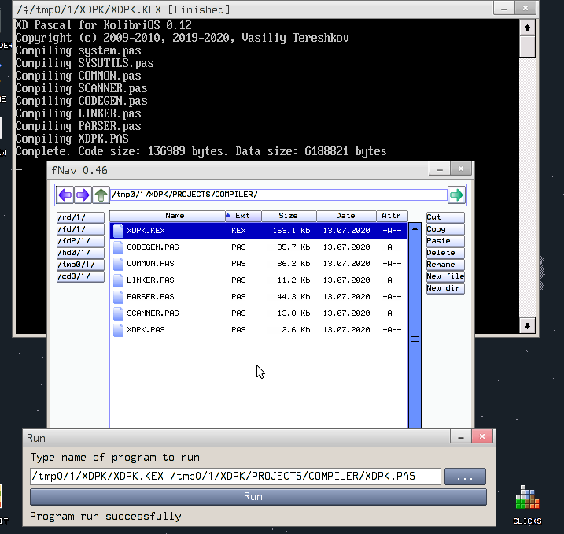

XD Pascal
XD Pascal
Тема про XD Pascal
Нам нужен архив XDPascal(xdpw+xdpk)(14.07.2020).7z
Который приложен к сообщению.
Я взял от него только нужную нам часть, и перезалил здесь.
Плюсом этого компилятора, что сразу как его скачал, без танцев с бубном, можно начать компилировать!
Из-под Windows:
путь\к\xdpk.exe test.pas
И в папке с исходником появится *.kex
Из-под Linux:
Либо:
1. Пересобрать для Linux, либо
2. Использовать Wine.
А потом пользоваться так же, как и в Windows.
Из-под KolibriOS:
Так же, как и в Windows, только вместо .exe написать .kex
